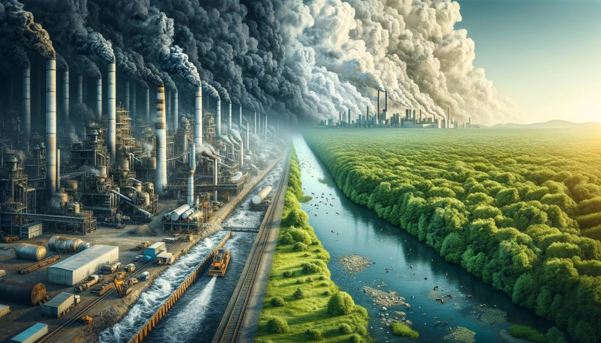
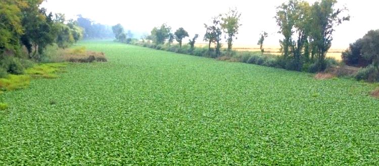
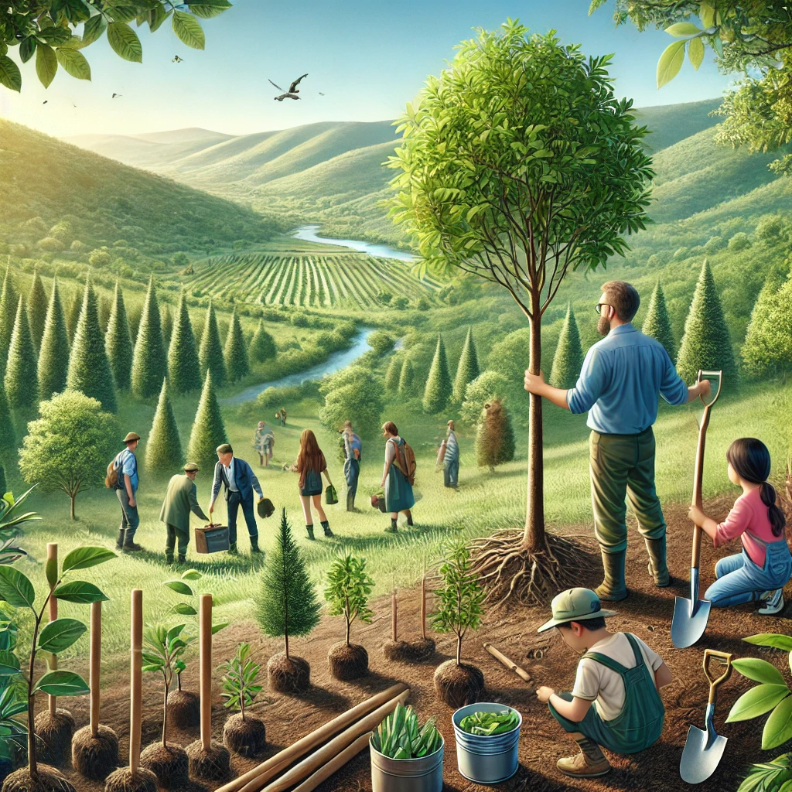

A conservação ambiental é essencial para garantir a sustentabilidade do planeta. Em Portugal, as atividades humanas e as mudanças climáticas têm provocado desafios significativos à fauna e flora, exigindo ações urgentes para proteger a biodiversidade.
Impacto Ambiental e Conservação
A fauna e flora em Portugal enfrentam desafios significativos, sendo a urbanização um dos principais. A expansão das cidades tem fragmentado habitats naturais, dificultando a sobrevivência das espécies. Além disso, a poluição afeta diretamente os ecossistemas, prejudicando a qualidade do solo, água e ar, essenciais para a vida. Outro fator crítico são as mudanças climáticas, que alteram os padrões de temperatura e precipitação, impactando os ciclos naturais das espécies e seus habitats. Esses fatores combinados tornam o ambiente mais hostil, ameaçando a biodiversidade do país.
As espécies invasoras representam um problema crescente em Portugal, com impactos negativos nos ecossistemas locais. Um exemplo é o jacinto-de-água, uma planta aquática que prejudica a fauna ao reduzir os níveis de oxigênio na água, afetando a vida de peixes e outros organismos aquáticos. Esse tipo de invasão compromete a saúde dos ecossistemas e pode alterar o equilíbrio ambiental, representando uma ameaça para a biodiversidade.
Portugal conta com várias áreas protegidas que são fundamentais para a preservação da biodiversidade. O Parque Nacional da Peneda-Gerês, por exemplo, abriga espécies ameaçadas e ecossistemas únicos, enquanto a Reserva do Estuário do Tejo é crucial para as aves migratórias, servindo como ponto de descanso durante suas rotas. No entanto, esses espaços enfrentam desafios significativos, como o turismo descontrolado e a falta de financiamento, o que compromete a sua eficácia na proteção da natureza e a conservação das espécies.
Diversos projetos estão em andamento em Portugal para promover a recuperação ambiental. O reflorestamento tem sido uma estratégia importante para recuperar áreas degradadas, restaurando ecossistemas danificados. A reintrodução de espécies como o lince-ibérico e a águia-imperial também é uma iniciativa chave, visando restabelecer a fauna nativa e equilibrar os ecossistemas. Além disso, a educação ambiental desempenha um papel crucial na sensibilização das comunidades sobre a importância da biodiversidade, incentivando a preservação dos recursos naturais e o respeito pelo meio ambiente.
